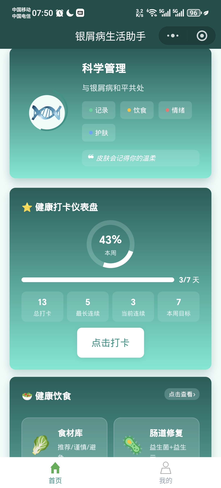
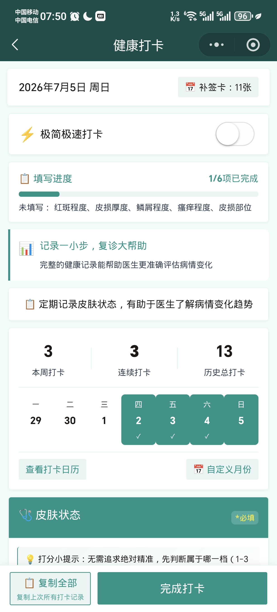
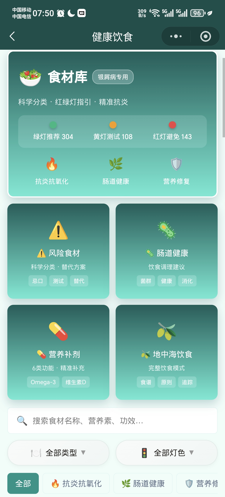
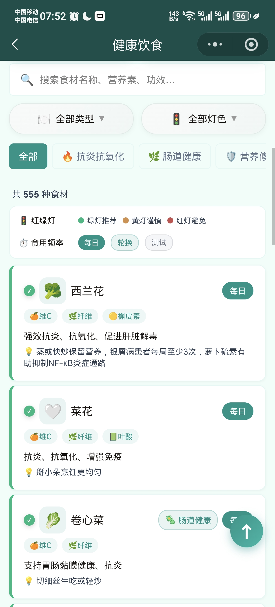
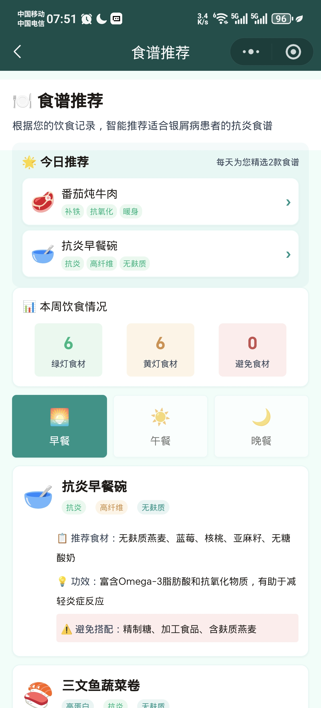
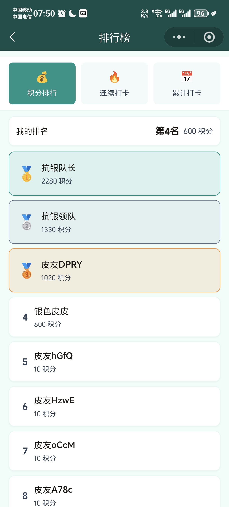
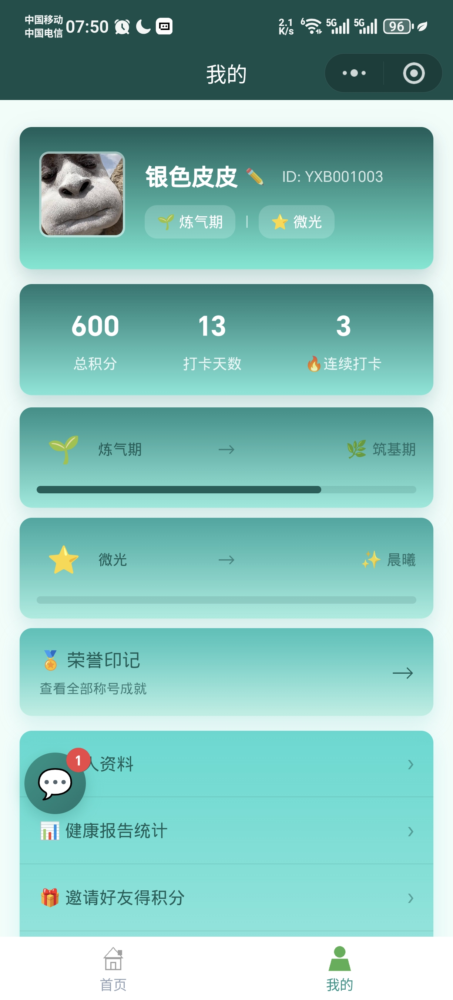
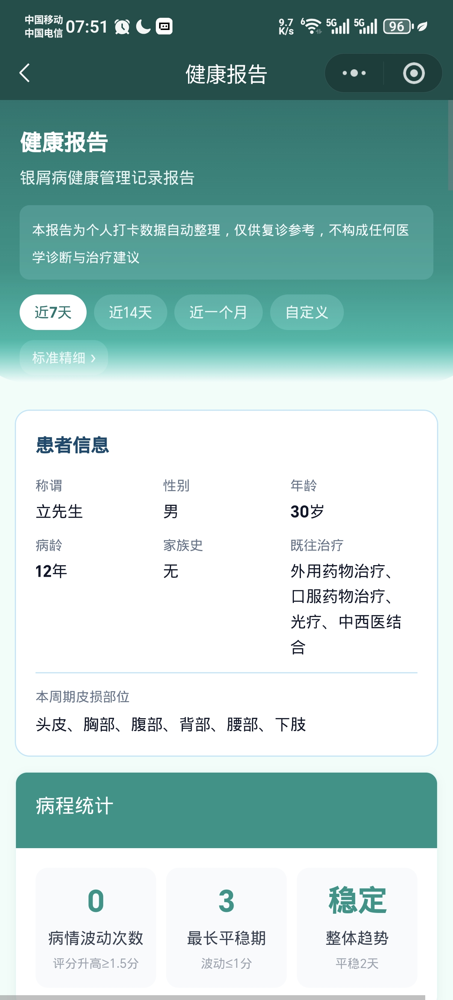

银屑病生活助手
银屑病患者的智能健康管理微信小程序
1 项目概述
银屑病生活助手是一款专门为银屑病（俗称"牛皮癣"）患者打造的微信小程序。通过智能健康打卡、专业食材库（红黄绿灯分类）、科学饮食建议、健康数据可视化和积分激励系统，帮助患者科学管理疾病，提升生活质量。
银屑病是一种慢性免疫性皮肤病，目前尚无根治方法，患者需要终身管理。国内约有超过 700 万银屑病患者，但市面上缺乏专门针对银屑病的综合性健康管理工具。本项目填补了这一市场空白。
2 用户痛点分析
饮食禁忌不明确
网络信息杂乱真假难辨，患者不知道哪些食物会加重病情
记录工具缺失
纸质记录麻烦易丢失，就医时病史说不清楚
用药管理混乱
多种药物混用，容易漏服或重复用药，缺乏系统管理
心理压力大
社交障碍，缺乏同路人支持，容易产生焦虑抑郁
痛点-解决方案对照
| 痛点 | 现状 | 我们的解决方案 |
|---|---|---|
| 饮食禁忌不明确 | 网络信息杂乱，真假难辨 | 555 条食材红黄绿灯分类 + 搜索功能 |
| 记录工具缺失 | 纸质记录麻烦易丢失 | 四维度打卡（皮损/饮食/用药/情绪），数据永久保存 |
| 病史管理混乱 | 就医时说不清楚 | 一键生成健康报告，支持分享给医生 |
| 缺乏坚持动力 | 打卡容易半途而废 | 积分奖励 + 连续打卡排行榜 + 补签卡机制 |
| 心理压力大 | 缺乏同路人支持 | 情绪记录追踪 + 每日鼓励 + 积分排行激励（V2.0 规划社区互助） |
3 核心功能（7 大模块）
智能健康打卡
皮损拍照、饮食记录、用药打卡、情绪评分，四维度全方位追踪
专业食材库
555 条食材，红黄绿灯三级分类，标注营养成分、功效、食用建议
健康数据报告
皮损趋势图、饮食分析、周/月度总结，一键生成分享报告
科学饮食方案
地中海饮食、抗炎饮食、食谱推荐等专业指导内容
积分激励系统
每日打卡积分、连续奖励、积分排行榜、补签卡兑换
用药与治疗管理
药物记录、治疗方案管理、治疗历史追踪
打卡日历
可视化日历展示打卡记录，连续打卡天数统计
用户核心使用流程
红黄绿灯食材分类系统
食材库的核心创新：每条食材标注红黄绿灯等级、营养成分、功效说明、食用建议、过敏风险、时令季节、搜索关键词等多维数据。
4 完整页面清单
核心功能页
个人中心页
内容与系统页
5 产品界面预览

首页
健康打卡
食材库
食材列表
食谱推荐
排行榜
个人中心
健康报告6 目标用户
核心用户画像
- 18-60 岁的银屑病患者，关注健康管理
- 轻中度患者，希望通过生活习惯改善控制病情
- 患者家属，希望帮助家人科学饮食
- 需要长期管理病情的慢性病患者群体
典型使用场景
每日晨间打卡
起床后花 2 分钟记录昨晚饮食、当前皮损状态和情绪
就餐前查询
不确定某种食材能否食用时，打开食材库快速搜索
就医前准备
一键生成健康报告，帮助医生快速了解病情变化趋势
查看排行
查看积分排行榜，与同路人比拼健康坚持，激发打卡动力
7 技术实现
云函数列表
| 云函数 | 功能 | 说明 |
|---|---|---|
| userLogin | 用户登录 | 手机号/账号密码登录 |
| syncData | 数据同步 | 本地与云端双向同步 |
| adminManage | 管理后台 | 积分管理、用户管理 |
| sendDailyReminder | 每日提醒 | 定时推送打卡提醒 |
| shareReport | 报告分享 | 生成分享链接和图片 |
| feedback | 意见反馈 | 用户反馈收集 |
| speechToText | 语音转文字 | 语音输入支持 |
| userMessages | 消息通知 | 系统消息推送 |
| security | 安全校验 | 接口安全验证 |
| migrateData | 数据迁移 | 版本升级数据迁移 |
| saveSubscription | 订阅管理 | 消息订阅状态 |
| addUserId | 用户ID管理 | 用户唯一标识生成 |
技术架构亮点
| 技术模块 | 方案 | 亮点 |
|---|---|---|
| 前端框架 | 微信小程序原生 ES5 | 兼容性最优，性能流畅 |
| 后端服务 | 微信云开发 | 免服务器运维，开箱即用 |
| 数据存储 | 云数据库 + 本地缓存 | 离线可用，启动时云端同步 |
| 功能灰度 | featureSwitch 配置 | 新功能按用户/白名单灰度发布 |
| 安全区域 | 动态 safeArea 适配 | 自动适配全面屏和异形屏 |
| 数据安全 | 加密存储 | 保护患者隐私数据 |
| 设计规范 | CSS 变量系统 | 全局配色方案 E 青蓝现代，统一可维护 |
开发工具
本项目全程使用 TRAE Work 进行 AI 辅助开发，利用 AI 智能助手完成需求分析、UI 设计、代码生成、配色方案迭代和优化，实现零基础到完整产品的开发。
8 价值与意义
效率提升
一站式健康管理，555 条食材秒查，数据可视化直观，就医沟通更高效
健康促进
四维度打卡促进习惯养成，积分机制提升坚持动力，科学饮食指导改善生活质量
9 创新亮点
- 国内最大银屑病专属食材库 -- 555 条食材数据，每条含红黄绿灯分类、营养成分、功效说明、食用建议、过敏风险、时令季节、搜索关键词等 8+ 维度数据
- 四维度健康打卡 -- 皮损（拍照）+ 饮食 + 用药 + 情绪，全面追踪病情影响因素
- 功能灰度发布 -- featureSwitch 系统支持按用户/白名单灰度上线新功能
- 云端+本地双存储 -- 离线可用，启动时自动云端同步，不丢失任何数据
- 游戏化坚持机制 -- 积分 + 连续打卡 + 排行榜 + 补签卡兑换，科学提升用户粘性
- 科学饮食方案体系 -- 地中海饮食、抗炎饮食等专业方案，配合食材库实现个性化饮食指导
- 用药与治疗管理 -- 药物记录、治疗方案管理、治疗历史追踪，完整用药档案
10 发展路线
| 阶段 | 已完成 / 规划 | 目标 |
|---|---|---|
| V1.3（当前） | 7 大核心模块 / 555 食材 / 积分激励 / 健康报告 | 核心功能完整闭环，满足日常管理需求 |
| V2.0（规划中） | 社区互助 + AI 饮食建议 / 社区内容审核 / 家属端 | 智能化升级，扩大服务范围，增加社交支持 |
| V3.0（规划中） | 健康商城 — 银屑病相关保健品、护肤品等产品推荐与购买（不涉及药品销售） | 延伸健康管理服务，满足患者长期护理需求 |
| V4.0（规划中） | 心理疗愈 — 在线心理咨询预约、情绪管理课程、正念冥想指导、心理支持社群，帮助患者应对长期慢性病带来的抑郁与焦虑 | 关注患者心理健康，从"管理身体"到"治愈身心" |
| V5.0 | 医生端 / 远程问诊对接 / 科研数据脱敏 | 连接医疗资源，打造完整生态 |